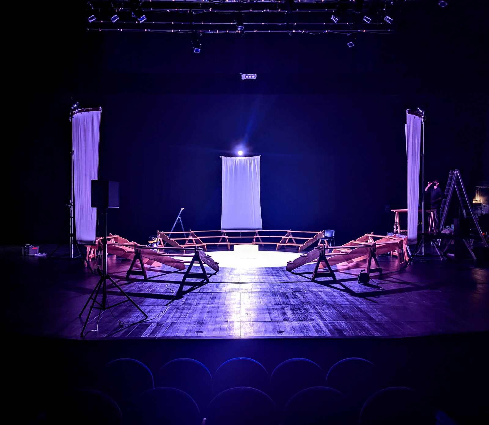
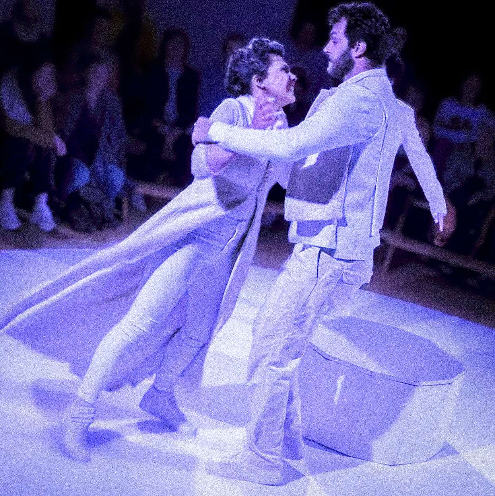
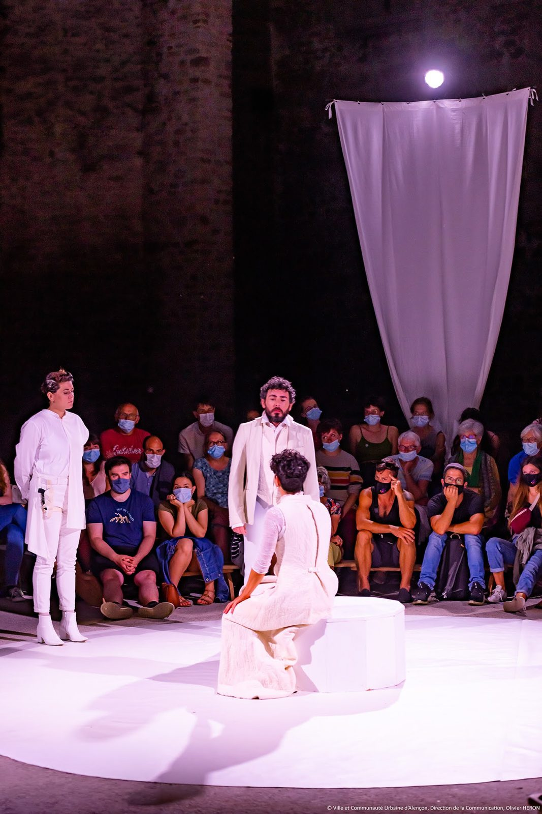
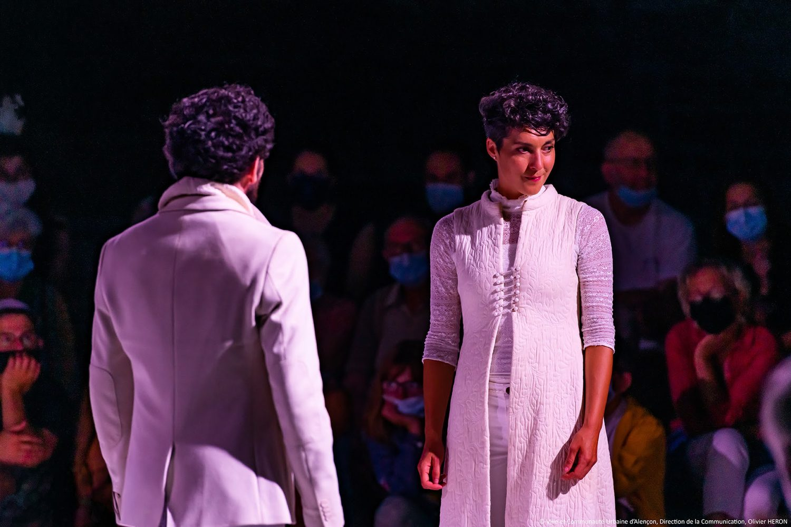
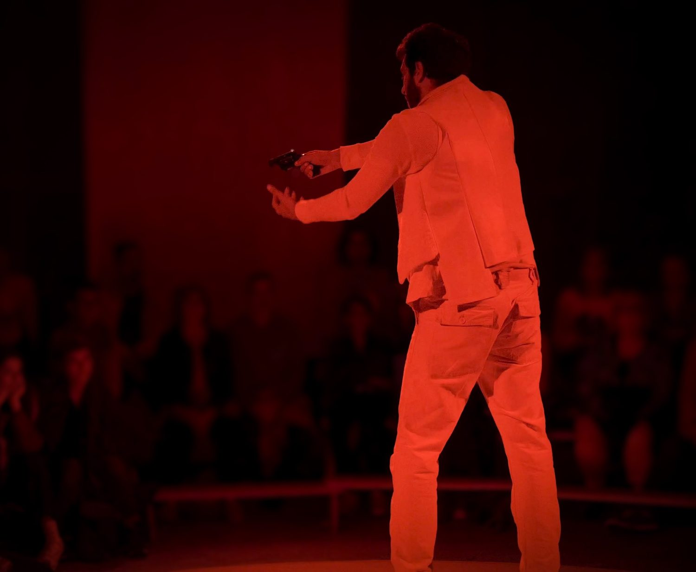
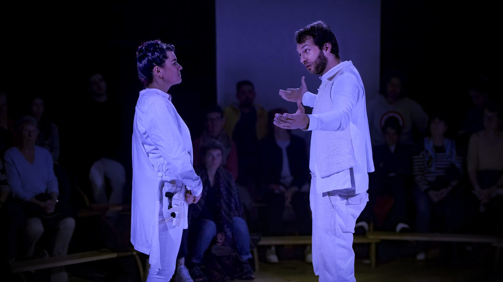
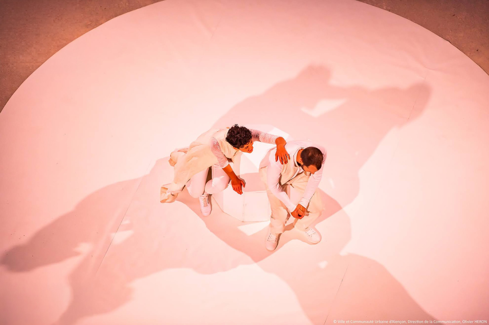

2022 · En tournée
Bérénice
Rôle Antiochus
Théâtre des Crescite — Angelo Jossec
Rome, an 79.
Huit jours après la mort soudaine de l'empereur Vespasien, le destin de Bérénice, Titus et Antiochus bascule.
Prochaines représentations
- 29 janv. 2027 Théâtre de la ville de Saint-Lô (50)
- 30 janv. 2027 Théâtre de la ville de Saint-Lô (50)
- 18 mai 2027 Lycée Corneille, Rouen (76) Séance scolaire, accès restreint
- 19 mai 2027 Lycée Corneille, Rouen (76) Séance scolaire, accès restreint
- 20 mai 2027 Lycée Corneille, Rouen (76) Séance scolaire, accès restreint
- 21 mai 2027 Lycée Corneille, Rouen (76)
Photographies








Photographies : Olivier Héron
Distribution
- Angelo Jossec
- Manon Rivier
- Lauren Toulin
- Adrien Vada